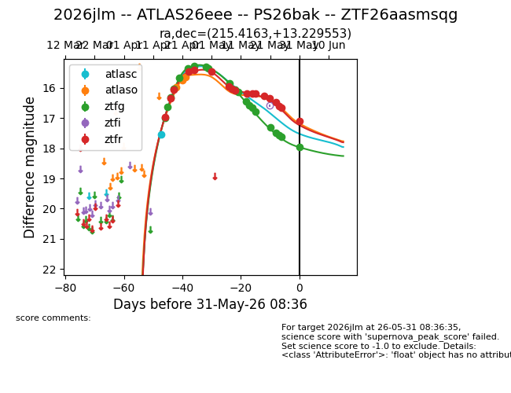
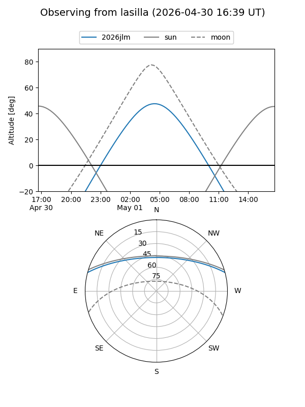
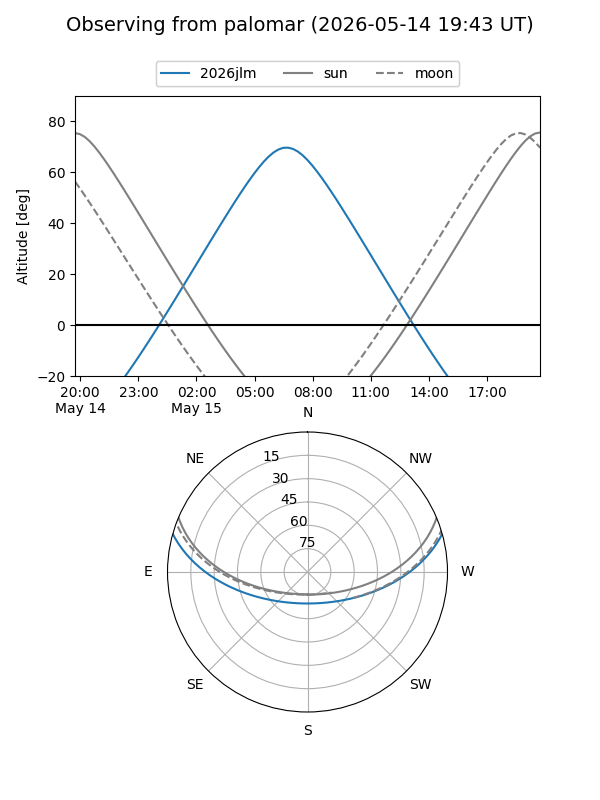
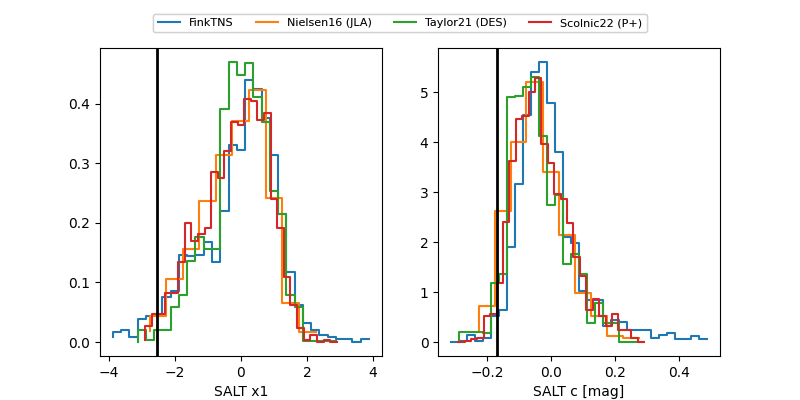

2026jlm
Target 2026jlm at 2026-05-31 08:37
Aliases and brokers:
lsst-FINK: link
lsst-Lasair: link
lsst-ALeRCE: link
ztf-FINK: link
ztf-Lasair: link
ztf-ALeRCE: link
TNS: link
YSE: link
alt names
ZTF26aasmsqg (ztf,fink_ztf)
2026jlm (tns,yse)
ATLAS26eee (atlas)
PS26bak (panstarrs)
Coordinates:
equatorial (ra, dec) = 215.4163,+13.22955
equatorial (HMS+DMS) = 14:21:39.91,+13:13:46.39
galactic (l, b) = (4.0189,+64.74857)
Flags:
TNS confirmed: nan
Photometry:
last atlasc=17.55, atlaso=15.64, ztfg=17.97, ztfr=17.09
1 atlasc, 3 atlaso, 21 ztfg, 18 ztfr detections
Lightcurve

Visibility


Additional plots
